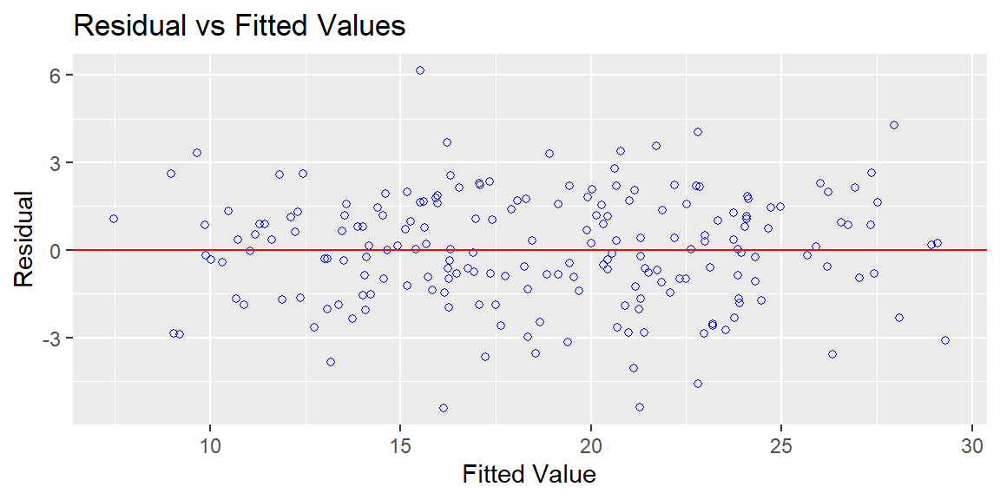
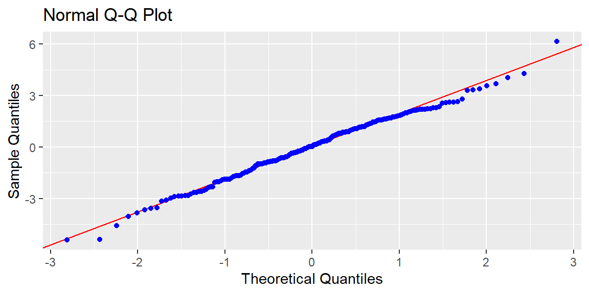
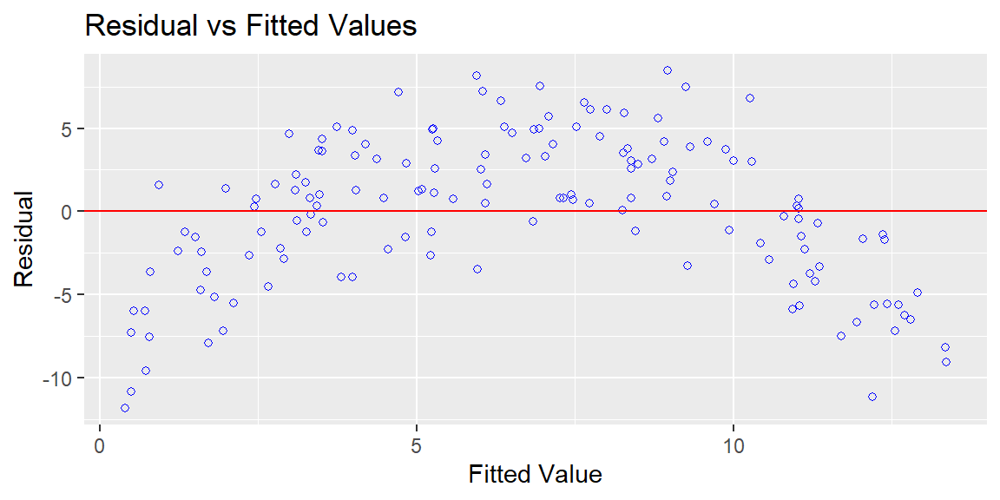
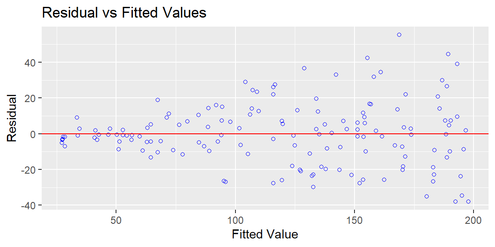
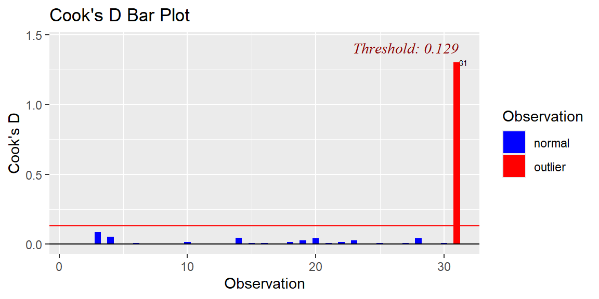
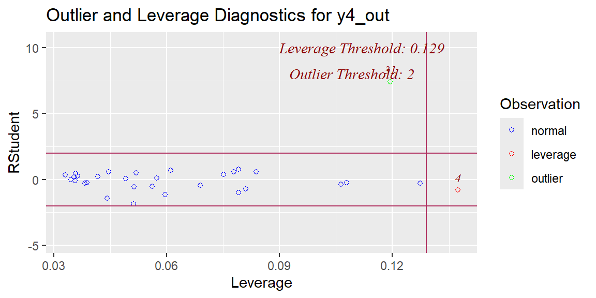
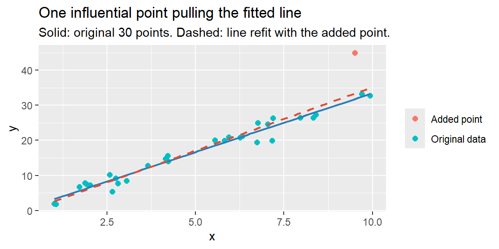

library(tidyverse)
library(olsrr)
ads <- read_csv("data/advertising.csv")
model <- lm(sales ~ tv + radio + online, data = ads)
ols_plot_resid_fit(model)
ols_plot_resid_qq(model)
Every confidence interval and hypothesis test in Chapter 22 and Chapter 23 was built on assumptions about how the data behaves. A high \(R^2\) and a tiny p-value don’t guarantee those assumptions actually hold, and a model built on violated assumptions can produce misleading standard errors, unreliable p-values, or predictions that quietly break down exactly where it matters most. Regression diagnostics are the checks that tell you whether a fitted model can actually be trusted, and this section covers the two things most worth checking: whether the model’s core assumptions hold, and whether a handful of unusual data points are secretly driving the results.
Simple and multiple linear regression rest on four assumptions, often remembered by the acronym LINE:
None of these can be checked by staring at \(R^2\) or a p-value. All four are checked primarily by looking at the residuals, \(e_i = y_i - \hat{y}_i\), the part of \(y\) the model didn’t explain.
Two plots do most of the work:
Base R can produce both (plot(model, which = 1) and which = 2), but the rest of this section uses the olsrr package instead, purpose-built for OLS regression diagnostics, with cleaner plots and formal tests to back up what the plots suggest.
Returning to the full advertising model from Chapter 23:
library(tidyverse)
library(olsrr)
ads <- read_csv("data/advertising.csv")
model <- lm(sales ~ tv + radio + online, data = ads)
ols_plot_resid_fit(model)
ols_plot_resid_qq(model)
The residuals-vs-fitted plot shows no strong curve and a reasonably even spread, no obvious linearity or equal-variance problem. The Q-Q plot’s points track the reference line closely across most of the range. Two formal tests back up that visual read. ols_test_normality() runs four separate normality tests at once (\(H_0\): the residuals are normally distributed):
ols_test_normality(model)-----------------------------------------------
Test Statistic pvalue
-----------------------------------------------
Shapiro-Wilk 0.9934 0.5137
Kolmogorov-Smirnov 0.0456 0.7998
Cramer-von Mises 12.5493 0.0000
Anderson-Darling 0.4049 0.3502
-----------------------------------------------The Shapiro-Wilk test gives \(p \approx 0.51\), no evidence against normality. ols_test_breusch_pagan() formally tests the equal-variance assumption (\(H_0\): the residual variance is constant):
ols_test_breusch_pagan(model)
Breusch Pagan Test for Heteroskedasticity
-----------------------------------------
Ho: the variance is constant
Ha: the variance is not constant
Data
---------------------------------
Response : sales
Variables: fitted values of sales
Test Summary
----------------------------
DF = 1
Chi2 = 0.3948653
Prob > Chi2 = 0.529753 With \(p \approx 0.53\), there’s no evidence against equal variance either. Overall, this model’s LINE assumptions look reasonably well satisfied, so the t-tests and confidence intervals computed for it in Chapter 23 can be trusted.
Suppose a company’s data actually follows a curved pattern, output rises with an input up to a point, then flattens or declines, but the analyst fits a straight line anyway:
set.seed(7)
n <- 150
x2 <- runif(n, 0, 10)
#simulate a genuinely curved (quadratic) relationship
y2 <- 3 + 4*x2 - 0.5*x2^2 + rnorm(n, 0, 3)
model_nonlin <- lm(y2 ~ x2)
ols_plot_resid_fit(model_nonlin)
The straight-line fit has \(R^2 \approx 0.40\) and a highly significant (but misleading) negative slope, but the residual plot shows a clear U-shape: residuals are positive at both low and high fitted values and negative in the middle. That curve is the signature of a linearity violation, the model is systematically over- and under-predicting in a pattern, not randomly. A straight line simply cannot capture this relationship; the fix isn’t a different sample, it’s a different functional form (for example, adding a squared term, covered further in later modules).
Suppose the variability in \(y\) genuinely grows as \(x\) grows, larger values are simply noisier:
set.seed(42)
n <- 150
x3 <- runif(n, 10, 100)
#simulate variance that grows with x
y3 <- 5 + 2*x3 + rnorm(n, 0, x3 * 0.3)
model_het <- lm(y3 ~ x3)
ols_plot_resid_fit(model_het)
The residuals fan out into a clear cone shape, tightly clustered at low fitted values, much more spread out at high fitted values. This is heteroscedasticity (unequal variance). The Breusch-Pagan test confirms it formally:
ols_test_breusch_pagan(model_het)
Breusch Pagan Test for Heteroskedasticity
-----------------------------------------
Ho: the variance is constant
Ha: the variance is not constant
Data
------------------------------
Response : y3
Variables: fitted values of y3
Test Summary
-------------------------------
DF = 1
Chi2 = 28.59312
Prob > Chi2 = 8.929881e-08 Compare this to Example 10.1’s result on the healthy advertising model (\(\text{Chi}^2 \approx 0.39\), \(p \approx 0.53\)): here, \(\text{Chi}^2 \approx 28.6\) with \(p < 0.0001\), decisively rejecting the equal-variance assumption. The fitted slope itself is still a reasonable estimate, but the standard errors, and therefore every p-value and confidence interval computed from this model, are no longer reliable, the formulas from Chapter 22 and Chapter 23 assume constant variance throughout. Common remedies include transforming the response (for example, modeling \(\log(y)\) instead of \(y\)) or using standard errors specifically adjusted for unequal variance.
For data collected over time (daily sales, weekly call volume), residuals can be correlated with each other from one period to the next, a violation of independence called autocorrelation. It’s checked with a residuals-vs-time plot (looking for trends or cycles rather than a patternless scatter) and matters most heavily once we reach time-series forecasting later in the course; for cross-sectional business data like the examples in this module, independence is usually satisfied as long as the observations (markets, stores, employees) genuinely don’t influence one another.
Three related but distinct ideas describe unusual data points:
Cook’s distance combines leverage and residual size into a single number per observation, summarizing how much the fitted model would change if that one point were removed. Common rules of thumb flag a point for closer inspection if its Cook’s distance exceeds about 1, or, for a stricter threshold, \(4/n\), the threshold olsrr uses by default in the plots below.
set.seed(99)
n4 <- 30
x4 <- runif(n4, 1, 10)
y4 <- 2 + 3*x4 + rnorm(n4, 0, 2)
model_clean <- lm(y4 ~ x4)
coef(model_clean)(Intercept) x4
-0.1304432 3.3582545 Now add one extreme point (\(x=9.5\), but with \(y=45\), far above what the rest of the pattern would predict there):
x4_out <- c(x4, 9.5)
y4_out <- c(y4, 45)
model_outlier <- lm(y4_out ~ x4_out)
coef(model_outlier)(Intercept) x4_out
-1.042118 3.620378 Adding a single point among 31 shifted the slope from about 3.36 to about 3.62 and the intercept from about \(-0.13\) to about \(-1.04\), a meaningful change from one observation. olsrr provides three tools that would flag this point directly, without needing to already know something was wrong.
A Cook’s distance bar chart flags any observation above the threshold:
ols_plot_cooksd_bar(model_outlier)
Observation 31 (the added point) is flagged with a Cook’s distance of about 1.30, far above the plot’s own \(4/n \approx 0.129\) threshold.
A residual-vs-leverage plot separates why a point is unusual, high leverage (an unusual \(x\)), a large residual (an unusual \(y\) given its \(x\)), or both:
ols_plot_resid_lev(model_outlier)
Observation 31 stands out here mainly for its enormous studentized residual (about 7.4), an extreme \(y\)-value given its \(x\), rather than for leverage alone, consistent with how it was constructed.
A formal outlier test (ols_test_outlier()) applies a Bonferroni-corrected significance test to each observation’s studentized residual, guarding against false alarms that would come from testing all 31 points at once:
ols_test_outlier(model_outlier) studentized_residual unadjusted_p_val bonferroni_p_val
31 7.418241 4.442276e-08 1.377106e-06Observation 31’s studentized residual of 7.42 is significant even after the Bonferroni correction (\(p \approx 0.0000014\)), formal confirmation that this point is a genuine, statistically extreme outlier, not just a visually striking one.

A high Cook’s distance is a flag to investigate, not an automatic instruction to delete. Sometimes an influential point is a data-entry error (worth fixing or removing); sometimes it’s a real, unusual, but entirely legitimate observation (a genuinely huge order, an exceptional store), and removing it would hide real business information just to make the model look tidier. Always ask why a point is unusual before deciding what to do about it.
Chapter 23 flagged this issue when introducing multiple predictors: multicollinearity occurs when two or more predictors are strongly correlated with each other. It doesn’t necessarily hurt the model’s overall predictive accuracy, but it makes the individual coefficients unstable and their standard errors inflated, undermining exactly the “holding other predictors constant” interpretation that makes multiple regression useful in the first place.
The variance inflation factor (VIF) measures this for each predictor: \[
\text{VIF}_j = \frac{1}{1-R_j^2}
\] where \(R_j^2\) comes from regressing predictor \(j\) on all the other predictors in the model. A VIF near 1 means that predictor is nearly unrelated to the others; a common rule of thumb flags VIF values above 10 as a real concern. olsrr::ols_vif_tol() computes this directly for every predictor in a model at once, alongside tolerance (\(1/\text{VIF}\), the share of a predictor’s variability not explained by the others), so there’s no need to compute it by hand.
Simulate two predictors that are almost the same thing, \(x_2\) tracks \(x_1\) extremely closely, (\(r \approx 0.98\)), and \(y\) genuinely depends on both:
set.seed(11)
n5 <- 100
x1 <- rnorm(n5, 50, 10)
x2 <- x1 + rnorm(n5, 0, 2)
y5 <- 20 + 1.5*x1 + 1.5*x2 + rnorm(n5, 0, 8)
model_multi <- lm(y5 ~ x1 + x2)
summary(model_multi)$coefficients Estimate Std. Error t value Pr(>|t|)
(Intercept) 20.422497 4.2542394 4.800505 5.744291e-06
x1 1.197139 0.4107279 2.914678 4.421297e-03
x2 1.783103 0.3996561 4.461595 2.192674e-05Both coefficients are still statistically significant, but look at how unstable they are: the true effect was \(1.5\) for each predictor, but the fitted model reports \(1.20\) for \(x_1\) and \(1.78\) for \(x_2\), with standard errors around four times larger than what a single, well-identified predictor would show. ols_vif_tol() confirms why:
ols_vif_tol(model_multi) Variables Tolerance VIF
1 x1 0.04359724 22.93723
2 x2 0.04359724 22.93723A VIF of about 23 for both predictors, far above the rule-of-thumb threshold of 10, and a tolerance of only about 0.044 (each predictor’s variability is about 96% explained by the other). Contrast this with the advertising model from Example 10.1:
ols_vif_tol(model) Variables Tolerance VIF
1 tv 0.9851215 1.015103
2 radio 0.9919613 1.008104
3 online 0.9776382 1.022873VIFs of about 1.02, 1.01, and 1.02 for TV, radio, and online spend, all close to 1, confirming what Chapter 23 already noted: the three channels are only weakly related to each other, so their individual coefficients can be trusted.
Fitting \(y_5\) on \(x_1\) alone shows the problem clearly: with \(x_2\) removed, \(x_1\)’s coefficient jumps to about \(2.99\), nearly the combined true effect of both variables (\(1.5+1.5=3.0\)), because \(x_1\) is now silently standing in for \(x_2\) as well.
If the goal is purely prediction, and the correlated predictors will keep moving together in the future the same way they did in the sample, multicollinearity may not matter much for the model’s overall accuracy. It becomes a real problem specifically when the goal is interpretation, isolating each predictor’s individual effect, since that’s exactly what becomes unreliable. Practical remedies include dropping one of the redundant predictors, or combining them into a single index if they’re measuring essentially the same underlying thing.
| Keyword | Definition |
|---|---|
| LINE assumptions | Linearity, Independence, Normality, Equal variance, the four conditions behind regression inference. |
| Residuals-vs-fitted plot | Checks linearity (look for curves) and equal variance (look for funnels); should show a patternless cloud around 0. olsrr::ols_plot_resid_fit(). |
| Normal Q-Q plot | Checks whether residuals are approximately normally distributed; points should track the diagonal reference line. olsrr::ols_plot_resid_qq(). |
| Heteroscedasticity | Unequal variance in the residuals; inflates uncertainty in standard errors, p-values, and confidence intervals even when coefficients themselves are still reasonable. Formally tested with olsrr::ols_test_breusch_pagan(). |
| Leverage | How unusual an observation’s predictor value(s) are, independent of its \(y\) value. |
| Influential point | A point whose removal would meaningfully change the fitted model; needs both leverage and a notable residual. |
| Cook’s distance | A combined measure of leverage and residual size; commonly flagged above 1 (or \(4/n\)) for closer inspection. olsrr::ols_plot_cooksd_bar(). |
| Residual-vs-leverage plot | Separates whether a flagged point stands out for its leverage, its residual, or both. olsrr::ols_plot_resid_lev(). |
| Bonferroni outlier test | A significance test on each observation’s studentized residual, corrected for testing every observation at once. olsrr::ols_test_outlier(). |
| Multicollinearity | Strong correlation among predictors; inflates standard errors and destabilizes individual coefficients without necessarily hurting overall prediction. |
| Variance inflation factor (VIF) | \(1/(1-R_j^2)\); commonly flagged above 10 as a sign of problematic multicollinearity. olsrr::ols_vif_tol(). |
| Tolerance | \(1/\text{VIF}\); the share of a predictor’s variability not explained by the other predictors in the model. |
A residuals-vs-fitted plot shows points fanning out into a clear cone shape as fitted values increase. Which LINE assumption does this violate, and which parts of the regression output (coefficients, or standard errors/p-values) become unreliable as a result?
A residuals-vs-fitted plot instead shows a clear U-shaped curve. Which assumption is violated, and what kind of fix does this call for (more data, a different sample, or something else)?
Explain the difference between an outlier, a high-leverage point, and an influential point, using a specific hypothetical example for each.
A regression has two predictors with a reported VIF of 15 for each. What does this number mean, and what specifically should an analyst be cautious about when interpreting this model’s individual coefficients?
A company drops an observation from its dataset because its Cook’s distance was unusually high, without investigating why that point was unusual. What could go wrong with this approach?
This is heteroscedasticity (unequal variance), a violation of the “equal variance” part of LINE. The coefficient estimates themselves are typically still reasonable, but the standard errors, and therefore every p-value and confidence interval built from this model, become unreliable.
This is a linearity violation, the true relationship isn’t a straight line. This isn’t fixed by collecting more data or a different random sample of the same relationship; it calls for a different functional form (e.g., adding a squared term or otherwise allowing curvature), since a straight line simply cannot capture the true pattern no matter how much more data of the same kind is collected.
An outlier has an unusual \(y\) given its \(x\): for example, a store with typical square footage but a wildly higher-than-expected quarterly revenue. A high-leverage point has an unusual \(x\) regardless of \(y\): for example, by far the largest store in the dataset, even if its revenue falls exactly where the fitted line would predict. An influential point is one whose removal would meaningfully change the fitted model: the largest store in the dataset would only be truly influential if its revenue were also unusual relative to what its size would predict, high leverage alone, with a value right on the line, often doesn’t move the fit much.
A VIF of 15 means that predictor’s variability is very strongly explained by the other predictor(s) already in the model (\(R_j^2 = 1 - 1/15 \approx 0.933\)), well above the common rule-of-thumb concern threshold of 10. The analyst should be cautious about trusting either predictor’s individual coefficient as a clean, isolated effect, their estimates are likely unstable and their standard errors inflated, even if the model’s overall predictions and \(R^2\) remain reasonable.
Without investigating first, the company risks deleting a real, legitimate, and business-relevant observation (an unusually large order, an exceptional location) simply because it doesn’t fit the existing pattern well, potentially hiding genuinely important information to make the model look cleaner. A high Cook’s distance should prompt investigation into why a point is unusual (a data-entry error versus a real outcome) before deciding whether removing it is actually appropriate.